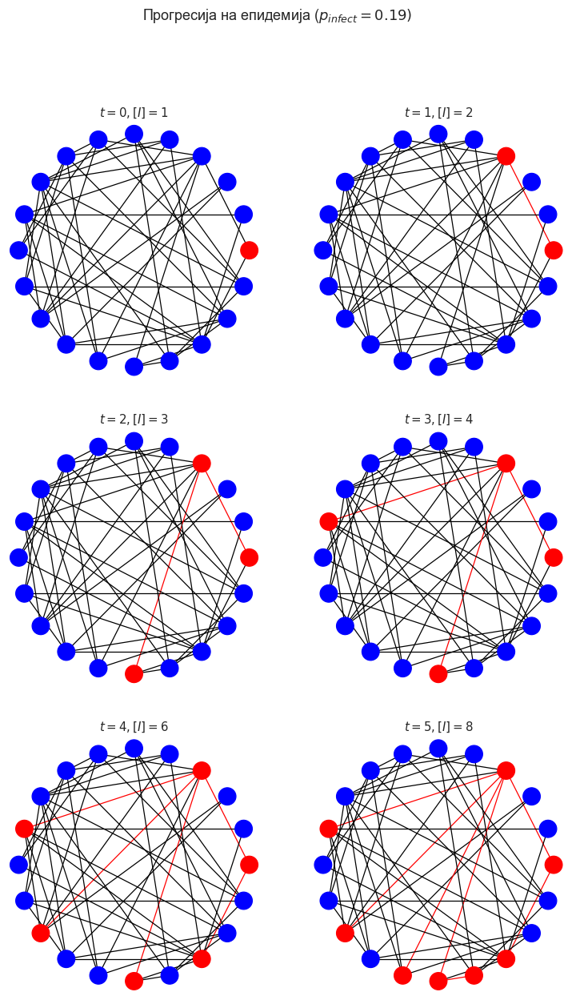
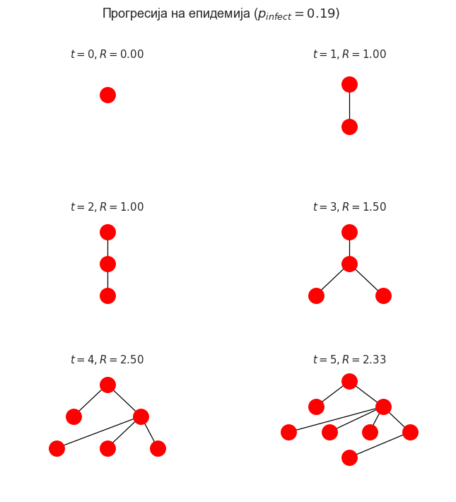

Следење на контакти¶
Progress of an epidemic
"""
Created on 20-Feb-21
@author: Kiril Zelenkovski
"""
import numpy
import networkx
import epyc
import epydemic
import matplotlib
import matplotlib.pyplot as plt
from matplotlib.collections import PatchCollection
from matplotlib.patches import Circle
import seaborn
matplotlib.rcParams['figure.dpi'] = 90
matplotlib.style.use('seaborn')
seaborn.set_context("notebook", font_scale=1)
def stepEpidemic(g):
# keep track of progress in this timestep
inf = []
# extract all the infected ndoes
infecteds = [n for n in g.nodes
if 'infected' in g.nodes[n].keys()]
# advance the epidemic
for n in infecteds:
infs = []
if 'infected' in g.nodes[n].keys():
# infect every susceptible neighbour
# with probability pInfect
for m in g.neighbors(n):
# ignore already-infected neighbours
if 'infected' not in g.nodes[m].keys():
# decide whether to infect or not
if numpy.random.random() < pInfect:
# we're infecting, record this
# and the edge the infection traversed
g.nodes[m]['infected'] = True
infs.append(m)
g.edges[n, m]['occupied'] = True
# record the infection mapping
if len(infs) > 0:
inf.append((n, infs))
# return the mapping of who infected whom
return inf
def drawEpidemic(g, ax, t):
# compute node colours
inf = 0
nodes = list(g.nodes)
ncs = ['blue'] * len(nodes)
for i in range(len(nodes)):
n = nodes[i]
if 'infected' in g.nodes[n].keys():
ncs[i] = 'red'
inf += 1
# compute edge colours
edges = list(g.edges)
ecs = ['black'] * len(edges)
for i in range(len(edges)):
(n, m) = edges[i]
if 'occupied' in g.edges[n, m].keys():
ecs[i] = 'red'
# draw the contact tree
networkx.draw_circular(g, ax=ax,
node_color=ncs, edge_color=ecs)
ax.set_title('$t = {t}, [I] = {i}$'.format(t=t, i=inf))
(fig, axs) = plt.subplots(3, 2, figsize=(10, 16))
# build a small ER contact network
N = 20
pEdge = 0.25
g = networkx.gnp_random_graph(N, pEdge)
# infect a single person
g.nodes[0]['infected'] = True
infs = [[(None, [0])]]
pInfect = 0.19
t = 0
for x in range(3):
for y in range(2):
# draw the infected nodes and tramission edges
ax = axs[x][y]
drawEpidemic(g, ax, t)
# advance the epidemic
infs.append(stepEpidemic(g))
t += 1
# fine-tune the figure
plt.suptitle('Прогресија на епидемија ($p_{\\mathit{infect}} = ' + '{i})$'.format(i=pInfect))
plt.savefig('images/3_1_Epidemic-progress.png')
plt.show()

Contact trees
def drawContactTree(ax, t, ct):
# turn the infection list into a network
g = networkx.Graph()
for infs in ct:
for (n, ms) in infs:
for m in ms:
g.add_node(m)
if n is not None:
g.add_edge(n, m)
# compute the layers in the tree and the number of
# infections from each individual
secondaries = dict()
ns = [0]
layers = [ns]
while len(ns) > 0:
layer = []
for n in ns:
gs = set(g.neighbors(n))
if len(layers) > 1:
gs -= set(layers[-2])
layer.append(list(gs))
if len(gs) > 0:
secondaries[n] = len(gs)
ns = [n for cs in layer for n in cs]
if len(ns) > 0:
layers.append(ns)
# compute locations
pos = dict()
dy = 1.0 / (len(layers) + 1)
y = 1.0 - dy / 2
for layer in layers:
dx = 1.0 / (len(layer) + 1)
x = dx
for n in layer:
pos[n] = (x, y)
x += dx
y -= dy
# compute R_t
if len(secondaries.keys()) > 0:
Rt = sum(secondaries.values()) / len(secondaries.keys())
else:
Rt = 0
# draw the tree
networkx.draw_networkx(g, pos, ax=ax,
node_color='red', with_labels=False)
ax.set_xlim([0, 1])
ax.set_ylim([0, 1])
ax.axis('off')
ax.set_title('$t = {t}, R = {rt:.2f}$'.format(t=t, rt=Rt))
(fig, axs) = plt.subplots(3, 2, figsize=(9, 9))
t = 0
for x in range(3):
for y in range(2):
ax = axs[x][y]
layers = infs[:(t + 1)]
drawContactTree(ax, t, layers)
t += 1
# fine-tune the figure
plt.suptitle('Прогресија на епидемија ($p_{\\mathit{infect}} = ' + '{i})$'.format(i=pInfect))
plt.savefig('images/3_2_Contact-tree.png')
plt.show()
